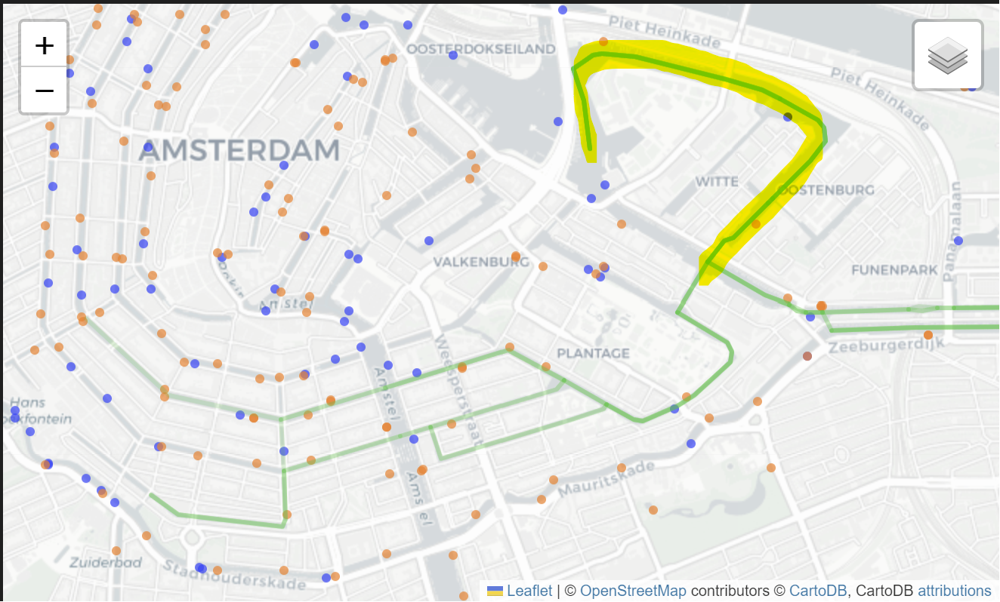
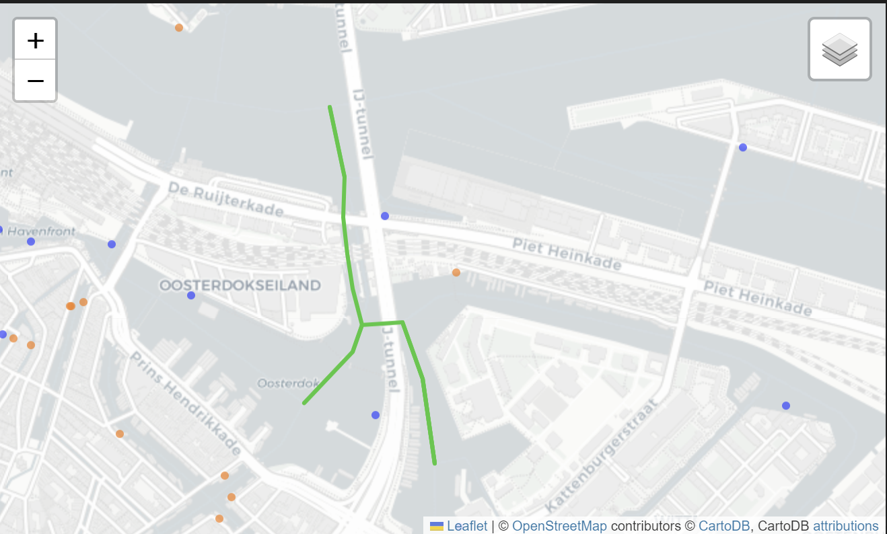
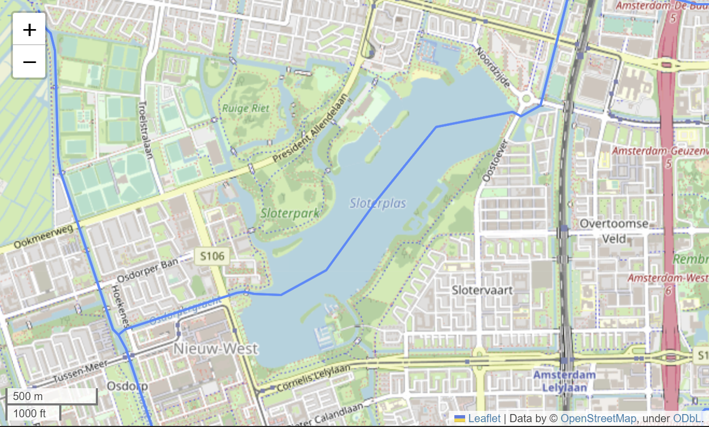

import geopandas as gpd
import json
import os.path
from pyproj import Transformer
import requests
import time
FILENAME_SEWER_NODES = "data/sewer_nodes.geojson"
FILENAME_SEWAGE_OVERFLOW_NODES = "data/sewage_overflow_nodes.geojson"
URL_SEWER_NODES = ("https://api.data.amsterdam.nl/v1/leidingeninfrastructuur/"
"waternet_rioolknopen/?page_size=1000")
SEWAGE_OVERFLOW_TYPES = [
"Uitlaat gemengde overstort", # Mixed overflow
"Uitlaat vuilwater nooduitlaat", # Black water emergency outlet
"(Externe) overstortput", # (External) overflow
"Overstort met signalering", # Overflow with signaling
"Interne overstortput", # Internal overflow
"Nooduitlaat met signalering" # Emergency overflow with signaling
]
def get_sewer_nodes(url, geojson_filename, is_test_run=False):
"""Return sewer nodes as geodataframe, read from the GeoJSON file.
If file does not exist, retrieve the data from the API and save results to
the GeoJSON file. If this is a test run and the API is called, only partial
results will be retrieved from the API.
Parameters:
url: API endpoint for sewage networks data
geojson_filename: file containing (or will contain) the saved data
is_test_run: if True, limit number of API requests made (for debugging)
"""
if os.path.exists(geojson_filename):
print("Sewer nodes data has already been parsed to GeoJSON in '{}'"
.format(geojson_filename))
gdf = gpd.read_file(geojson_filename)
else:
print(("Sewer nodes GeoJSON file does not exist. "
"Requesting data from API{}").format(url))
geojson_data = retrieve_sewer_nodes_data_from_api(url, is_test_run)
# Save data for future use
with open(geojson_filename, "a+", encoding='utf-8') as outfile:
json.dump(geojson_data, outfile)
print("Sewer nodes data saved to file '{}'".format(geojson_filename))
gdf = gpd.GeoDataFrame.from_features(geojson_data['features'])
return gdf
def retrieve_sewer_nodes_data_from_api(url, is_test_run=False):
"""Return sewer nodes data as GeoJSON.
In test runs, limit the number of API requests made."""
data_entries = request_sewer_nodes_data_from_api(url, is_test_run)
geojson_data = parse_sewer_node_results(data_entries)
return geojson_data
def request_sewer_nodes_data_from_api(url, is_test_run=False):
"""Retrieve all sewer node results from API.
For test runs, stop after first 3 pages of results."""
api_response = requests.get(url, headers={'User-Agent': 'data1'}).json()
sewer_node_entries = []
num_pages_requested = 0
while api_response is not None:
time.sleep(0.5) # avoid spamming server
data = api_response["_embedded"]["waternet_rioolknopen"]
sewer_node_entries += data
if "next" in api_response["_links"]: # has next page of results
api_response = requests.get(api_response["_links"]["next"]["href"],
headers={'User-Agent': 'data1'}).json()
else: # is last page of results
api_response = None
num_pages_requested += 1
if is_test_run and num_pages_requested >= 3:
break
return sewer_node_entries
def parse_sewer_node_results(sewer_node_entries):
"""Parse sewer node results from Amsterdam sewer network API to GeoJSON"""
transformer = Transformer.from_crs("EPSG:7415", "EPSG:4326")
geojson = {
"type": "FeatureCollection",
"features": []
}
for entry in sewer_node_entries:
x, y, z = entry["geometrie"]["coordinates"]
lat, lon = transformer.transform(x, y)
feature = {
"type": "Feature",
"geometry": {
"type": "Point",
"coordinates": [lon, lat]
},
"properties": {
"id": entry["id"],
"typeKnoop": entry["typeKnoop"]
}
}
geojson["features"].append(feature)
return geojson
def get_sewage_overflow_nodes(url,
sewer_nodes_filename,
sewage_overflow_nodes_filename,
is_test_run):
"""Return sewage overflow points as geodataframe read from the
GeoJSON file. If file does not exist, get and process the sewer nodes data,
then save results to the GeoJSON file.
Parameters:
url: API endpoint for sewage networks data
sewer_nodes_filename: name of GeoJSON file containing (or will contain)
the saved sewer nodes data
sewage_overflow_nodes_filename: name of GeoJSON file containing
(or that will contain) the saved
sewage overflow nodes data
is_test_run: if True, limit number of API requests made (for debugging)
"""
if os.path.exists(sewage_overflow_nodes_filename):
print("Sewage overflow nodes data already exists in file '{}'"
.format(sewage_overflow_nodes_filename))
gdf_overflows = gpd.read_file(sewage_overflow_nodes_filename)
else:
gdf_sewer_nodes = get_sewer_nodes(url, sewer_nodes_filename,
is_test_run)
gdf_overflows = gdf_sewer_nodes[gdf_sewer_nodes["typeKnoop"]
.isin(SEWAGE_OVERFLOW_TYPES)]
gdf_overflows.to_file(sewage_overflow_nodes_filename)
print("Sewage overflow nodes data saved to file '{}'"
.format(sewage_overflow_nodes_filename))
return gdf_overflows
pgdf_overflows = get_sewage_overflow_nodes(
URL_SEWER_NODES, FILENAME_SEWER_NODES, FILENAME_SEWAGE_OVERFLOW_NODES,
is_test_run=False
)(Swim) water quality of Amsterdam canals
To host an open water swim meet in the canals of Amsterdam, we must first ensure that the water quality is good enough for swimming. Unfortunately, only official bathing sites in the Amsterdam canals are monitored for water quality. (Waternet n.d.) Thus, there is limited data available.
We do know that there are various factors that affect the quality of water, such as sewage overflows, water currents, temperature and more (Tillaart 2017). If we had data sampled at appropriate locations and sufficient background knowledge, we would use a model to estimate water pollution levels and how they are affected by weather and canal traffic. For now, we will use the available data for some basic analysis.
Datasets found
Here is the list of datasets we have identified with regards to water pollution levels, along with the relevant available sources (if existant) of information and their formats.
| # | Parameter | Explanation | Source | Format |
|---|---|---|---|---|
| 1. | Pollution levels in Herensgracht and Prinsengracht | Chemical composition of the water | Study | Journal |
| 2. | Pollution levels in swimming locations | Chemical levels in swimming locations in 2019 with interpreted data | Dataset | Excel |
| 3. | Places with sensors available. | |||
| 4. | Historical data for water quality. | |||
| 5. | Sewage overflows | Used Python script to convert file to Geojson. | Dataset | JSON |
| 6. | Canal traffic | Traffic densities of canals | Report | Image |
Sewage overflows
Since Amsterdam uses a combined sewage system, sewage overflows are a major source of water pollution after heavy rain. (Tillaart 2017) We can see if there areas without sewage overflow points in the canals.
The Waternet sewerage network data is available on Overheid.nl. Unfortunately, the download link for the WFS data returned a 404 error. Instead, we used the provided API to retrieve the sewage nodes, then saved it to sewer_nodes.geojson. We then filtered the data to get the sewage overflow nodes and saved it to sewage_overflow_nodes.geojson.
We then plot the sewage overflow points on a map.
import folium
map_of_sewage_overflow_nodes = pgdf_overflows.explore(
legend=True,
name="Sewage Overflow Points",
)
folium.TileLayer("CartoDB positron", show=False).add_to(
map_of_sewage_overflow_nodes
)
map_of_sewage_overflow_nodesObserve that there are fewer sewage overflow points in the northeast area of Amsterdam’s canals, near Marineterrein. Assuming water pollution dissipates quickly with distance from the sewage overflow point, we can choose a route that avoids most of the sewer nodes to ensure better water quality for the swim.
Canal Traffic
Boat traffic is another source of water pollution. Due to the lack of exhaust gas treatment systems in boat engines, as found in all modern car engines, a modern 5 horsepower 4-stroke outboard engine can be as polluting as 39 passenger cars driving at 95 km/h. (Propel 2022) As of 2020, there are about 12 550 boats in the canals of Amsterdam, approximately 550 of which are commercial boats, the remaining 12000 are recreational boats. Of the commercial fleet about 75% is emission free, while for recreational boats this percentage is only 5%. (Sterling 2020)
While we do not know the detailed relationship between boat traffic and water quality, we do know that water toxicity as a result of fossil fuelled boats can stay present up to 14 days after the use of boats (Jüttner et al. 1995). Thus, one possibility is to limit the number of fossil fuelled boats in the two weeks prior to the event.
Choosing a route
Since the Amsterdam City Swim is held annually in the canals, this suggests that an open water swim is feasible. However, we will need to find a suitable 5km route. We have been told to ensure that the event does not impact commercial water transport, and has a small impact on the canal boat routes.
Canal traffic
To minimise impact on boat routes, we look for a route that avoids areas of high canal traffic. This would also result in a route with cleaner water.
Waternet commissioned TNO to produce a model to predict traffic densities in the canal. (Snelder, Minderhoud, and Calvert 2013) The prediction results from the model are as follows (image only, as we do not have access to the raw data):

Amsterdam City Swim
We take reference from the Amsterdam City Swim, which is held every summer in the canals of Amsterdam. We have the routes for 2019 and 2023, both of which are the same, other than the direction.


Identifying potential routes
Based on the City Swims, Amsterdam Oost seems to be a suitable area for open water swimming events. Visual comparison also shows that Amsterdam Oost has relatively fewer sewage overflow points and less canal traffic.

Thus, we have identified 3 potential 5km routes in this area, indicated in the images below. Our recommendation is the third route, as it traverses the fewest number of sewage overflow points.


Recommendations
We propose the following route, which traverses the fewest number of sewage overflow nodes and avoids areas with high traffic.
However, since Waternet recommends people to avoid swimming in the waters for 3 days after heavy rainfall (Waternet n.d.), we would recommend finding an alternative backup route in case there is heavy rainfall prior to the event. It would also be better for water quality should fossil fuelled boats be banned from the area for two weeks before the event, though this may not be economically feasible.
Auto-generated routes
After selecting a route manually, we also prepared a script to automatically identify potential routes for the swim. This appendix describes the process, as well as a comparison between the routes found manually and automatically.
Finding potential routes
Here is the list of datasets we have identified, along with the relevant available sources and their formats.
| # | Parameter | Explanation | Source | Format |
|---|---|---|---|---|
| 1. | Sewage overflows | Used Python script to convert file to Geojson. | Dataset | JSON |
| 6. | Embarkation and disembarkation points | Proxy for canal traffic | Dataset | GeoJSON |
Steps:
- Create the network of potential canals in Amsterdam, excluding canals with high shipping traffic.
- For each waterway (excluding canals with high shipping traffic), count the number of embarkation/disembarkation points and sewage overflow points that lie nearby.
- Find all possible 5 km routes starting from the Marineterreine swimming area, keeping track of the number of embarkation/disembarkation points and sewage overflow points for each route.
- Sort the 5 km routes by the number of embarkation/disembarkation points, then by the number of sewage overflow points.
- Plot the top 10 routes on a map for comparison.
Create network of traversable canals for the open swim meet
import osmnx as ox
# Import canals of Amsterdam, excluding waterways with high shipping traffic
ams_canals = ox.graph_from_place(
'Amsterdam, Netherlands',
custom_filter=('["waterway"~"canal|river|ditch"]'
'["name"!~"IJ|Noordzeekanaal|Amsterdam-Rijnkanaal"]'))
ox.graph_to_gdfs(ams_canals, nodes=False).explore()Count number of points of interest that lie near each waterway
def count_points_close_to_lines(lines, points, buffer_dist, counts_label):
"""Count the number of points that lie within buffer area of each line"""
# Based on code from https://stackoverflow.com/a/54128782
lines_with_counts = lines.copy()
spatial_index = points.sindex
results_list = []
for index, line in lines.iterrows():
buffer = line['geometry'].buffer(buffer_dist)
# Find approximate matches with r-tree,
possible_matches_index = list(
spatial_index.intersection(buffer.bounds))
possible_matches = points.iloc[possible_matches_index]
# then use the results to find precise matches
precise_matches = possible_matches[possible_matches.intersects(buffer)]
results_list.append(len(precise_matches))
lines_with_counts[counts_label] = results_list
return lines_with_countsgdf_overflows = gpd.read_file("./data/sewage_overflow_nodes.geojson")
gdf_embarks = gpd.read_file("./data/disembarking_points.json")
# Project geometries so distances are in meters
proj_ams_canals = ox.project_graph(ams_canals)
pgdf_ams_canals = ox.graph_to_gdfs(proj_ams_canals, nodes=False)
pgdf_overflows = ox.projection.project_gdf(gdf_overflows,
to_crs=proj_ams_canals.graph['crs'])
pgdf_embarks = ox.projection.project_gdf(gdf_embarks,
to_crs=proj_ams_canals.graph['crs'])
gdf_ams_canals_w_counts = count_points_close_to_lines(pgdf_ams_canals,
pgdf_overflows,
65,
'num_overflows')
gdf_ams_canals_w_counts = count_points_close_to_lines(gdf_ams_canals_w_counts,
pgdf_embarks,
65,
'num_embarks')View no. of overflow points for each canal
# We use this map to visually check if the buffer distance is reasonable.
map_ams_canals_overflows = gdf_ams_canals_w_counts.explore(
column='num_overflows',
cmap='viridis_r',
tiles="CartoDB positron")
pgdf_overflows.explore(m=map_ams_canals_overflows, style_kwds={"opacity": 0.5})View no. of embarkation points for each canal
map_ams_canals_embarks = gdf_ams_canals_w_counts.explore(
column='num_embarks', cmap='viridis_r', tiles="CartoDB positron")
pgdf_embarks.explore(m=map_ams_canals_embarks, style_kwds={"opacity": 0.5})Find 5km routes and score each route
For simplicity, we find the shortest path that is at least 5 km long instead of finding paths that are exactly 5 km long. To get the exact length, we will need to create a new node at the required location and split edges accordingly, which is more complicated.
Note that this means the scores computed for each route may not be accurate. For example, routes which are much longer than 5km due to the last edge being very long might have many overflow points from the excess part of the route.
While finding the routes, we also compute the scores for each route. Any column name in the geodataframe gdf_with_scores (that contains numeric values) can be used for scoring. The score of a route is the sum of its values for all edges in the route.
def find_routes_of_length_w_scores(start_node, graph, length,
score_names, gdf_with_scores):
"""Finds all (shortest possible) routes that are at least the
specified length.
Parameters:
start_node: start node of routes
graph: nx graph for finding paths
length: min length of route
score_names: list of column names in gdf_with_scores.
The values for edges in the route will be summed
to obtain a score for the route.
gdf_with_scores: dataframe containing scores for each edge
Returns:
(routes, scores): list of routes, where a route is a list of
traversed edges, and
list of scores, containing one score for
each score name
"""
invalid_score_names = list(filter(lambda x:
x not in gdf_with_scores.columns,
score_names))
if len(invalid_score_names) > 0:
raise Exception("Score name(s) missing from gdf_with_scores: {}"
.format(", ".join(invalid_score_names)))
def find_routes_containing_path(curr_node, curr_path,
curr_length, curr_weights, graph):
if curr_length > length: # found valid route
return [curr_path], [curr_weights]
traversed_nodes = [edge[0] for edge in curr_path] + [curr_node]
prev_node = curr_path[-1][0] if len(curr_path) > 0 else None
incident_edges = graph.edges(curr_node, keys=True)
routes_containing_curr_path = []
route_scores = []
for edge in incident_edges:
if edge[1] in traversed_nodes: # avoid loops
continue
new_path = curr_path + [edge]
edge_length = graph.edges[edge]["length"]
edge_data = gdf_with_scores.loc[edge]
new_weights = [curr_weights[i] + edge_data[score_name]
for i, score_name in enumerate(score_names)]
routes_with_new_node, scores = find_routes_containing_path(
edge[1],
new_path,
curr_length + edge_length,
new_weights, graph)
routes_containing_curr_path.extend(routes_with_new_node)
route_scores.extend(scores)
return routes_containing_curr_path, route_scores
return find_routes_containing_path(start_node, [], 0,
[0 for x in score_names], graph)We find all routes of length at least 5 km, and score using the number of sewage overflow nodes and number of embarkation/disembarkation points along the route.
# Use Marineterrein pool as start point
lat, lon = 52.37343358243731, 4.916215248650945
start_node = ox.distance.nearest_nodes(ams_canals, lon, lat, return_dist=False)
routes, scores = find_routes_of_length_w_scores(start_node, ams_canals, 5000,
['num_overflows',
'num_embarks'],
gdf_ams_canals_w_counts)
print("Found {} routes.".format(len(routes)))Next, we rank the routes by number of embarkation/disembarkation points, then by number of sewage overflow nodes. We prioritise impact on canal traffic over sewage overflows, as sewage overflows are a risk only in heavy downpour.
import pandas as pd
df_scored_routes = pd.DataFrame({
'id': range(len(routes)),
'edge_list': routes,
'num_embarks': [score[1] for score in scores],
'num_overflows': [score[0] for score in scores],
})
ranked_routes = df_scored_routes.sort_values(['num_embarks', 'num_overflows'])
top_route_ids = ranked_routes['id'].tolist()[0:10]
ranked_routes[0:10]Then, we plot the routes on the map.
Plot top 10 routes on map
# workaround, otherwise calling folium.plugins directly gives an error
import folium.plugins as plugins
def edge_list_to_gdf(graph, edge_list):
node_list = [x for (x, y, k) in edge_list]
node_list.append(edge_list[-1][1])
return ox.utils_graph.graph_to_gdfs(
graph.subgraph(node_list), nodes=False).loc[edge_list]
gdf_routes = [edge_list_to_gdf(ams_canals, routes[id]) for id in top_route_ids]
complete_map = folium.Map(tiles="cartodbpositron",
location=(lat, lon),
zoom_start=14)
for i in range(min(10, len(gdf_routes))):
folium.GeoJson(
gdf_routes[i].to_json(),
name="Route {}".format(i + 1),
style_function=lambda feature: {
"weight": 3,
"opacity": 0.3,
"color": "#1AC938",
},
show=(i < 1)
).add_to(complete_map)
# Plot points as circles, see https://stackoverflow.com/a/65836395
folium.GeoJson(gdf_embarks.to_json(),
marker=folium.CircleMarker(radius=3, # in meters
weight=0, # outline
fill_color="#023EFF",
fill_opacity=0.7),
name="Embarkation points").add_to(complete_map)
folium.GeoJson(gdf_overflows.to_json(),
marker=folium.CircleMarker(radius=3,
weight=0,
fill_color="#FF7C00",
fill_opacity=0.7),
name="Sewage overflow points").add_to(complete_map)
folium.LayerControl().add_to(complete_map)
complete_mapAnalysis
Generated routes go north; manually selected routes go south
It is interesting to note that all the top ten routes went northwards, as opposed to our three routes which went southwards.
|  | |
|---|---|
|
|
While we did use embarkation/disembarkation points instead of canal traffic data, the northern route has a traffic density of 0%, so the northern route seems to be a better choice in terms of having fewer sewage overflow points and also smaller impact on canal traffic.
However, the available datasets consider only a limited number of factors. While we did not explicitly state this, the reason we avoided the northern route was because it goes through an area of Marineterrein which is contaminated by oil, heavy metals, tar-like substances and PAHs (Vijsel 2012). This has a critical impact on the water quality, yet is not captured by the datasets.
Furthermore, while selecting our routes, we took reference from the Amsterdam City Swim route, since the organizers would have considered other factors that we might have missed out on.
Unexpected results highlight implicit assumptions and expectations
Code considers only what is stated; humans use context and background knowledge. The automatically generated routes did not match our manually generated routes even though we seemed to be considering the same factors, because we considered other factors in our selection that we may not even be explicitly aware of.
For example, the code originally allowed for loops in the routes (allow nodes to be visited twice), so that we could obtain routes similar to our third proposed route. However, this resulted in counter-intuitive routes that seem less pleasant and harder to manage, such as the below route.

As such, we disallowed loops instead. This also reduced time required since the search space is smaller. However, we may miss out some feasible routes.
Constraints imposed by the dataset
Besides the limitations mentioned in previous sections, the structure of the network also constrains the possible routes. For example, the lake in Sloterplas is represented using a single line, which rules out the possibly of swimming around the circumference of the lake.

Conclusion
Using a program to find routes allowed us to search more comprehensively in less time. However, the program is constrained by the assumptions built into the code, as well as the provided datasets. We often consider multiple factors in our decisions, without necessarily being aware of those factors. Automating the process made our assumptions and considerations much more explicit.
Given more time and resources, we would use these identified gaps as a guide to look for more data. Through repeated iterations, we can hopefully find a solution that humans may miss out (since we are less thorough), but that considers the broad set of factors that we use.
Nonetheless, data can be hard to collect and datasets hard to find, and not all intuitions can be easily made explicit. Perhaps this is where machine learning combined with human judgement can take us further.
References
Jüttner, Friedrich, Diedrich Backhaus, Uwe Matthias, Ulf Essers, Rolf Greiner, and Bernd Mahr. 1995. “Emissions of Two- and Four-Stroke Outboard Engines—i. Quantification of Gases and VOC.” Water Research 29 (8): 1976–82. https://doi.org/https://doi.org/10.1016/0043-1354(94)00330-A.
Propel. 2022. “Why Amsterdam Is a Perfect Example of Cities Going Carbon-Neutral.” Why Amsterdam Is a Perfect Example of Cities Going Carbon-Neutral. https://propel.me/nl/article/why-amsterdam-is-a-perfect-example-of-cities-going-carbon-neutral/.
Snelder, Maaike, Michiel Minderhoud, and Simeon Calvert. 2013. “Op de Amsterdamse Grachten, Hebben Wij Nu de Drukte in de Hand, Amsterdam ...” November.
Sterling, Toby. 2020. “Amsterdam’s Boats Go Electric Ahead of 2025 Diesel Ban.” Reuters, March. https://www.reuters.com/article/us-climate-change-netherlands-idUSKBN20Q1W7.
Tillaart, Amber van den. 2017. “(Swim) Water Quality Modelling in the City of Amsterdam,” February.
Vijsel, Annemarie van de. 2012. “Het Marineterrein: Verontreinigde Toplocatie.” Nieuw Amsterdams Peil. https://www.napnieuws.nl/2012/11/08/het-marineterrein-een-verontreinigde-toplocatie/.
Waternet. n.d. “Swimming.” Accessed October 14, 2023. https://www.waternet.nl/en/our-water/safe-swimming/.